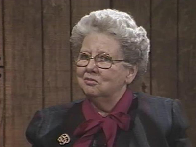

Winkler Center Oral Histories
Winkler Center Oral Histories
Oral history videorecordings of interviews with important physicians, scientists, and other health professionals in Cincinnati medical history, e.g. Deans of the College of Medicine, Department Chairmen, Researchers, Faculty, etc.